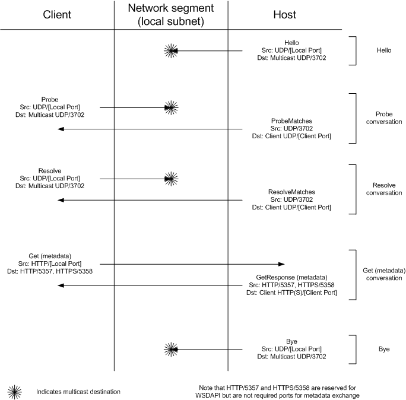

Device Profile for Web Services (DPWS) hosts and clients communicate over the network using a series of SOAP messages over UDP and HTTP.
The following diagram shows an overview of the expected UDP and HTTP traffic between a DPWS host and client.

Hello, Bye, Probe, Resolve, and Get messages are all generated without network solicitation; these messages are used to announce device state or to issue a search request. ProbeMatches, ResolveMatches, and GetResponse messages are generated in response to Probe, Resolve and Get messages.
Hello, Bye, Resolve, and ResolveMatches messages will always occur over UDP. Similarly, Get and GetResponse metadata messages will always occur over HTTP or HTTPS. Probe and ProbeMatches messages are normally transmitted over UDP, but take place over an HTTP or HTTPS connection in a directed discovery scenario. For more information about directed discovery message patterns, see Troubleshooting Applications Using Directed Discovery.
The following list shows the typical sequence of messages on the wire. Not all messages are mandatory.
Â
Â